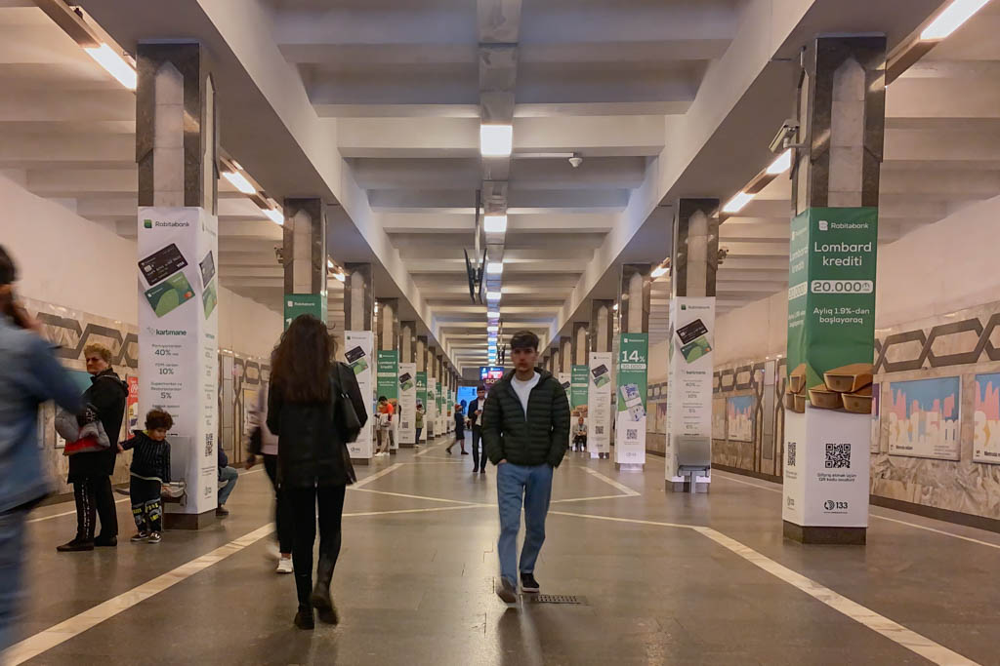
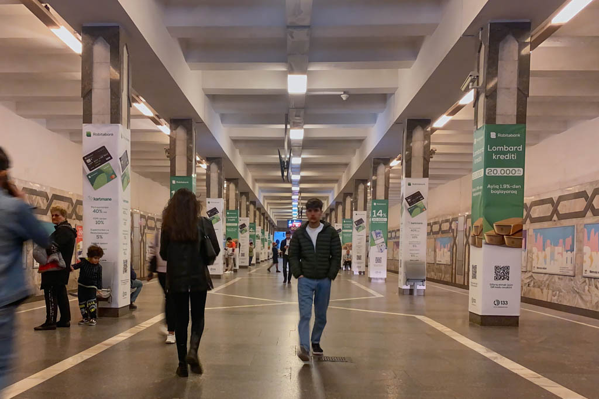

Named after Hazi Aslanov, a major-general of the Soviet Armored Troops who was twice awarded the Hero of the Soviet Union for his valor in battle during World War II. Hazi Aslanaov Station opened December 10, 2002. The station is located near the Hazi Aslanov Military Academy. Hazi Aslanaov Station is located at the terminus of both the Red and Green Lines.